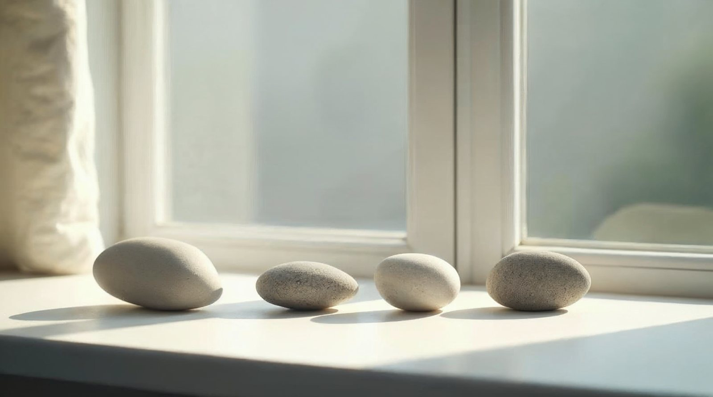
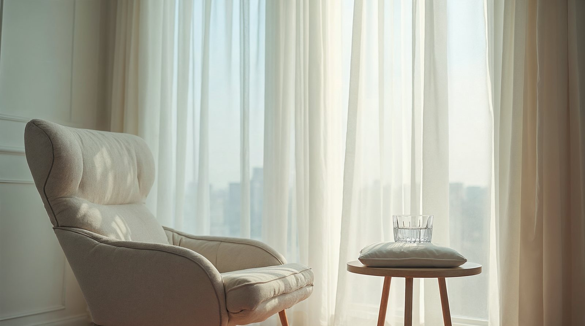
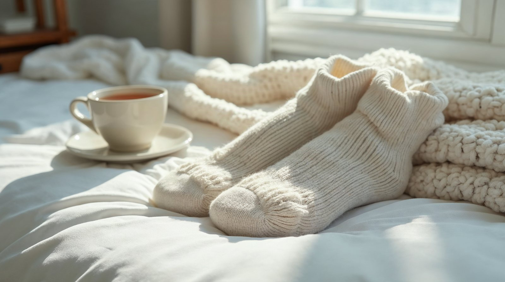
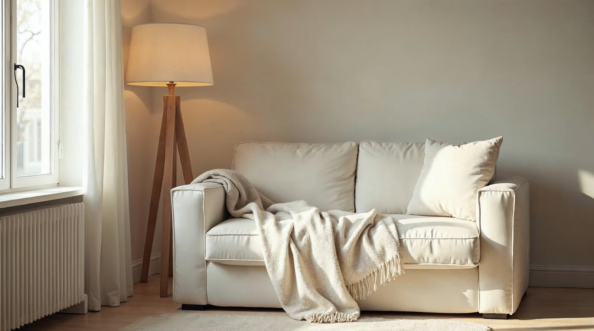
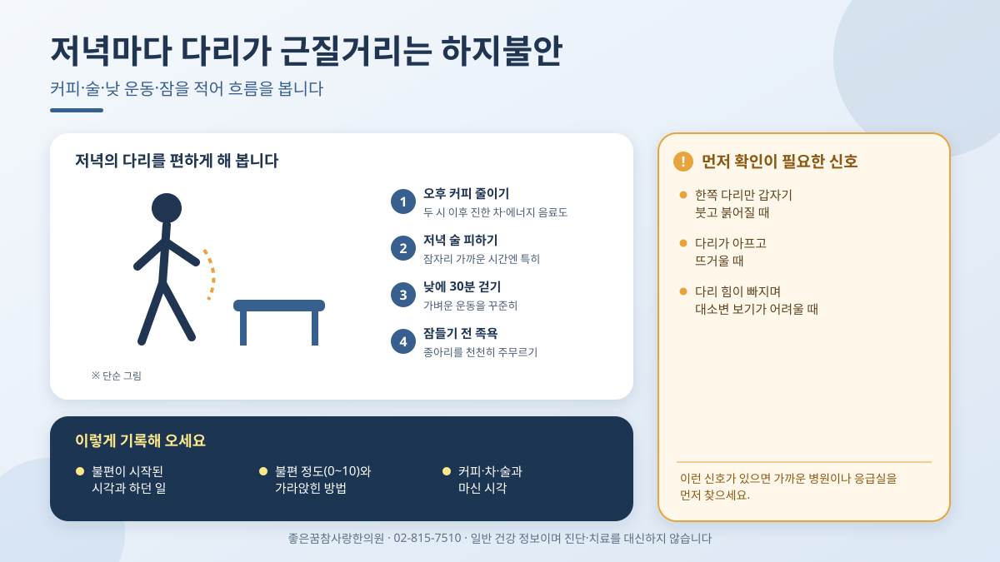

이종호 한의사 감수좋은꿈참사랑한의원 대표원장 (한의사 면허번호 19769)발행 2026-11-26 · 수정 2026-11-26
이 글의 차례
하루 일을 마치고 소파에 앉아 텔레비전을 켭니다. 이제 좀 쉬어야지 하는 순간, 종아리 깊은 곳이 스멀스멀 간질거리기 시작합니다. 다리를 꼬았다 풀었다, 발목을 돌렸다 해 봐도 잠깐뿐입니다. 결국 일어나 거실을 몇 바퀴 걸어야 조금 가라앉습니다.
잠자리에 누워도 마찬가지입니다. 불을 끄고 눈을 감으면 다리 속에서 무언가 기어가는 듯, 탄산이 터지는 듯한 느낌이 올라옵니다. 이불 밖으로 다리를 내밀었다가, 주무르다가, 다시 일어나 걷다 보면 어느새 새벽입니다.
이렇게 쉬거나 누워 있을 때 다리 속에 불편한 느낌이 들고 움직이고 싶은 충동이 생기며, 움직이면 잠시 가라앉고, 저녁과 밤에 더 심해진다면 하지불안 증후군을 떠올려 봅니다.
진단과 약 처방은 신경과에서 받으시고, 한의원에서는 그 곁에서 잠과 몸의 냉기, 식사와 피로, 마음의 긴장을 함께 살핍니다.
이 증상을 겪는 분들은 말로 설명하기가 너무 어렵다고들 하십니다. 아프다고 하기도, 저리다고 하기도 애매하니 가족에게도 잘 전해지지 않습니다. 밤마다 혼자 거실을 서성이는 그 시간이 얼마나 길게 느껴지실지 마음이 쓰입니다.
왜 하지불안 증후군이 생길까요
하지불안 증후군은 뇌에서 움직임과 감각을 조절하는 신호 전달이 저녁과 밤 시간에 흔들리면서 생기는 것으로 설명합니다. 특히 도파민이라는 신경전달물질과 몸속 철분이 관련 있다고 알려져 있습니다.
뇌 안에 철분이 부족하면 도파민이 제 역할을 하기 어려워진다고 봅니다. 그래서 혈액 검사에서 빈혈이 없더라도 몸에 저장된 철분 수치(페리틴)가 낮은 경우 하지불안 증상이 함께 나타나기도 합니다.
가족 가운데 비슷한 증상을 가진 분이 있는 경우도 많습니다. 또 임신 중, 신장 기능이 떨어진 경우, 철분이 부족한 경우, 특정 약을 드시는 경우에 생기거나 심해질 수 있다고 알려져 있습니다.
우리 몸에는 하루의 리듬이 있어서, 저녁이 되면 도파민 활동이 자연스럽게 줄어듭니다. 하지불안 증상이 낮보다 저녁과 밤에 심해지는 것도 이 리듬과 관련이 있다고 봅니다.
한의학에서는 이런 다리의 불편함을 혈(血)이 부족해 근육과 힘줄을 제대로 적셔 주지 못하는 상태, 또는 몸이 차서 흐름이 막힌 상태로 살펴 왔습니다. 손발의 냉기, 잠의 깊이, 피로를 함께 보며 몸 전체의 흐름을 읽으려 합니다.
다리에 쥐가 나는 것, 저림과는 어떻게 다를까요
밤에 다리가 불편하다고 모두 하지불안 증후군은 아닙니다. 비슷해 보이는 것들을 나눠 보면 이렇습니다.
다리에 쥐가 나는 경우
종아리 근육이 갑자기 딱딱하게 뭉치며 심하게 아프고, 발가락이 오그라드는 경우는 근육 경련, 흔히 말하는 쥐입니다. 근육을 늘려 주면 풀리고, 움직이고 싶은 충동보다는 통증이 앞선다는 점이 다릅니다.
허리에서 내려오는 저림
허리 디스크나 척추관 협착증에서 오는 저림은 엉덩이에서 다리로 선을 따라 내려가고, 걷거나 특정 자세에서 심해지는 경우가 많습니다. 하지불안은 오히려 가만히 있을 때 심해지고 걸으면 가라앉는다는 점이 다릅니다.
발 끝부터 저리고 화끈거리는 경우
양쪽 발끝부터 양말을 신은 듯 둔하고 화끈거리며, 낮이나 밤이나 비슷하게 이어진다면 말초신경 쪽 문제를 살핍니다. 당뇨가 있는 분이라면 특히 함께 확인합니다.
혈액 순환 문제
걸을 때 종아리가 아파 멈춰 쉬어야 하고, 쉬면 가라앉는다면 다리 혈관 쪽 문제를 살피기도 합니다. 하지불안과는 움직임과 증상의 관계가 정반대입니다.
자세가 불편해서 생기는 뒤척임
잠자리가 불편하거나 오래 앉아 다리가 뻐근해서 자세를 바꾸는 것과는 다릅니다. 하지불안은 자세를 바꿔도 다시 불편한 느낌이 올라와 움직이고 싶은 충동이 반복된다는 점이 특징입니다.

스스로 확인해 볼 네 가지
신경과에서도 아래 네 가지를 중심으로 하지불안 증후군을 살핍니다. 내 증상과 견주어 보세요.
- 다리에 불편한 느낌이 들면서 움직이고 싶은 충동이 있다
- 쉬거나 가만히 앉아 있거나 누워 있을 때 시작되거나 심해진다
- 걷거나 다리를 움직이면 적어도 움직이는 동안은 가라앉는다
- 낮보다 저녁이나 밤에 더 심하다
네 가지가 모두 해당된다면 신경과 진료에서 이야기해 보시길 권합니다. 몇 가지만 해당되더라도 잠을 설칠 만큼 불편하다면 진료 때 함께 말씀해 주세요.
잠에 미치는 영향
하지불안 증후군에서 가장 힘든 것은 결국 잠입니다. 잠드는 데 한참이 걸리고, 겨우 잠들어도 다리가 저절로 툭툭 차는 움직임 때문에 자주 깨기도 합니다. 함께 자는 가족이 "밤새 발로 찼다"고 말해 주어 알게 되는 경우도 있습니다.
잠이 모자라면 낮에 졸리고 집중이 흐려지며, 예민해지기 쉽습니다. 그리고 지친 몸은 다시 저녁의 다리 불편함을 더 크게 느끼게 만듭니다. 그래서 다리만 보지 않고 잠의 흐름 전체를 함께 살핍니다.

오래 앉아 있어야 하는 자리에서
하지불안 증상이 있는 분들은 영화관, 비행기, 긴 회의, 장거리 버스처럼 오래 앉아 있어야 하는 자리를 가장 힘들어하십니다. 가만히 있어야 한다는 생각만으로도 다리가 먼저 불편해지는 느낌이 든다고 하십니다.
이럴 때는 미리 자리를 고르는 것이 도움이 됩니다. 통로 쪽 자리를 잡아 두면 중간에 일어나 걷기가 한결 편합니다. 회의가 길어질 것 같으면 중간에 잠시 일어나 서 있어도 괜찮을지 미리 양해를 구해 두는 것도 방법입니다.
앉아 있는 동안에는 발목을 위아래로 천천히 젖혔다 펴거나, 발바닥으로 바닥을 꾹 눌렀다 떼는 작은 움직임을 해 보세요. 남의 눈에 잘 띄지 않으면서도 다리에 움직임을 줄 수 있습니다.

계절과 몸의 냉기
진료실에서 들어 보면 날이 추워지는 계절에 다리 불편함이 더 심해졌다는 말씀을 자주 듣습니다. 다리가 차가워지면 근육이 움츠러들고, 그만큼 불편한 느낌에 더 예민해지는 것으로 보입니다.
겨울에는 잠자리에 들기 전에 다리를 따뜻하게 해 두세요. 수면 양말이나 무릎 담요가 도움이 됩니다. 다만 전기장판을 너무 뜨겁게 오래 켜 두면 오히려 다리가 달아올라 불편하다는 분도 있으니, 내 몸에 맞는 온도를 찾아보세요.
반대로 여름철 에어컨 바람이 다리에 바로 닿는 자리도 피하시는 편이 좋습니다. 사무실 책상 아래로 찬바람이 들어온다면 얇은 담요 하나를 무릎에 덮어 두세요.
낮에도 증상이 올라올 때
처음에는 잠자리에서만 불편하던 다리가, 시간이 지나며 저녁 식사 뒤나 오후 늦게부터 불편해졌다는 분이 있습니다. 증상이 시작되는 시각이 점점 앞당겨지거나 팔까지 번진다면 그 변화도 신경과에 꼭 전해 주세요. 약의 종류나 양과 관련 있는 경우도 있다고 알려져 있습니다.
먼저 이렇게 여쭙니다
처음 오시면 저는 대략 이런 순서로 여쭙습니다. 기억나는 것부터 말씀해 주셔도 괜찮습니다.
- 다리 속 느낌을 본인의 말로 표현하면 어떤가요? 양쪽인가요, 한쪽인가요?
- 하루 중 언제부터 시작되나요? 앉아 있을 때, 누웠을 때?
- 걷거나 주무르면 가라앉나요? 얼마 만에 다시 올라오나요?
- 잠드는 데 얼마나 걸리고, 밤에 몇 번 깨나요?
- 최근 혈액 검사에서 빈혈이나 철분 이야기를 들으신 적이 있나요?
- 지금 드시는 약(감기약, 위장약, 수면 관련 약, 마음 관련 약 등)은 무엇인가요?
- 커피, 차, 술, 담배는 하루에 얼마나 드시나요?
다리만 여쭙지 않고 그 증상이 하루를 어떻게 바꿔 놓았는지도 함께 여쭙습니다. 영화관이나 비행기처럼 오래 앉아 있어야 하는 자리를 피하게 되었는지, 낮에 졸음이 쏟아지는지가 다음에 무엇부터 챙길지를 정해 줍니다.

일상에서 먼저 해 볼 수 있는 것
생활 습관을 조금 바꾸는 것이 저녁 시간을 덜 힘들게 하는 데 도움이 될 수 있습니다. 아래에서 지금 할 수 있는 것 하나부터 골라 보세요.
- 오후 두 시 이후에는 커피, 진한 차, 에너지 음료를 줄여 보기
- 저녁 술은 줄이고, 특히 잠자리 가까운 시간에는 피하기
- 낮에 30분 정도 걷기처럼 가벼운 운동을 꾸준히 하기
- 잠들기 전 미지근한 물로 족욕을 하거나 종아리를 천천히 주무르기
- 저녁에 앉아 있을 때는 한 시간에 한 번 일어나 몇 분 걷기
- 잠자리에 드는 시각과 일어나는 시각을 일정하게 맞추기
운동은 낮에 하는 것이 좋습니다. 잠들기 직전에 땀이 날 만큼 격하게 움직이면 오히려 몸이 깨어나 잠들기 어려울 수 있습니다. 저녁에는 종아리와 허벅지를 천천히 늘려 주는 스트레칭 정도가 알맞습니다.
머리를 써야 하는 일에 집중하면 증상이 덜 느껴진다는 분도 있습니다. 저녁에 가만히 앉아 텔레비전을 보는 대신 손으로 하는 일이나 퍼즐, 책 읽기처럼 마음이 쏠리는 일을 해 보시는 것도 방법입니다.
드시는 약 가운데 일부는 하지불안 증상을 키울 수 있다고 알려져 있습니다. 감기약이나 알레르기약, 속 메스꺼움 약, 일부 마음 관련 약이 그런 예로 이야기됩니다. 스스로 끊지 마시고 처방한 의사와 상의해 주세요.
한의원에서 함께 살필 수 있는 경우
- 신경과 진료를 받으면서 잠과 피로, 몸의 냉기를 함께 살피고 싶은 경우
- 손발이 차고 다리가 무거우며 저녁이면 다리 불편함이 심해지는 경우
- 다리 때문에 잠을 설쳐 낮에 지치고 예민해진 경우
- 철분 보충이나 신경과 약을 이어 가며 생활 습관을 함께 정리해 보고 싶은 경우
좋은꿈참사랑한의원에 처음 오시면 먼저 양손을 올려 달라고 말씀드리고 맥을 짚습니다. 맥을 짚으며 신경과 진료 여부와 드시는 약, 잠과 소화, 손발의 온도, 생리와 출혈, 대소변을 여쭙고, 다른 병원에서 받은 혈액 검사 결과가 있으면 함께 봅니다.
진찰 뒤에는 상태에 따라 종아리와 허벅지, 허리와 발의 자리를 살피며 침이나 온열 치료를 상의할 수 있습니다. 저녁 시간대에 증상이 심한 분이라면 진료 시간도 편한 때로 함께 맞춥니다.
한약은 진찰 뒤 필요하다고 판단될 때 상의합니다. 신경과 약이나 철분제를 드시고 있다면 이름을 모두 알려 주세요. 함께 드셔도 되는지 신중하게 확인하고 정합니다.
다시 오시면 지난번 이후 잠드는 데 걸린 시간과 밤에 깬 횟수, 다리 느낌이 어땠는지부터 이어서 여쭙습니다.
이렇게 기록해 오시면 상담이 쉬워집니다
저녁과 밤의 일은 낮 진료실에서 떠올리기 어렵습니다. 2주만 적어 보세요.
- 다리 불편함이 시작된 시각과 그때 하던 일
- 불편함의 정도(0부터 10까지)와 가라앉게 한 방법
- 잠자리에 든 시각, 잠든 것 같은 시각, 밤에 깬 횟수
- 그날 마신 커피·차·술과 시각
- 낮에 걷거나 운동한 시간
- 드신 약과 철분제, 시각
휴대폰 메모에 짧게 적어도 충분합니다. 빠진 날이 있어도 괜찮습니다. 함께 자는 가족이 본 밤의 모습도 한 줄 적어 주시면 큰 도움이 됩니다.
가족이 함께 알아 두면 좋은 것
곁에서 보는 가족은 밤마다 일어나 서성이는 모습에 "왜 가만히 못 있어?" 하고 답답해하기 쉽습니다. 하지만 겪는 분은 가만히 있고 싶어도 그럴 수 없는 불편함과 싸우는 중입니다.
저녁 산책을 함께 나가 주고, 잠자리를 따로 쓰는 것이 서로의 잠에 낫다면 그것도 편하게 상의해 보세요. 탓하기보다 "오늘은 좀 어때?" 하고 물어 주는 것만으로도 마음이 한결 놓입니다.
다리 속의 그 이상한 느낌은 겪어 보지 않은 사람에게 설명하기가 참 어렵습니다. 그래서 밤마다 더 외로우셨을 겁니다. 서두르지 않고, 무엇이 저녁을 힘들게 하는지부터 함께 정리해 보겠습니다. 다음에 오시면 지난 2주 동안 잠과 다리가 어땠는지부터 여쭙겠습니다.
이런 증상은 먼저 확인이 필요합니다
- 한쪽 다리만 갑자기 붓거나, 붉게 달아오르며 아픈 경우
- 다리에 힘이 점점 빠지거나, 소변·대변을 보기 어려워진 경우
이런 신호가 있으면 한의원보다 가까운 병원이나 응급실을 먼저 찾으세요.
함께 읽으면 좋은 글
- 밤에 누우면 다리가 근질거리고 움직이고 싶어 잠들기 어려울 때는 어떻게 하나요?
- 손발이 저리고 차가울 때는 어떤 점을 먼저 확인하나요?
- 당뇨가 있는데 발끝이 저리고 화끈거리거나 감각이 둔해지는 말초신경병증은 어떻게 살피나요?
- 밤에 충분히 자도 낮에 졸음이 쏟아지는 과다수면·기면증 의심은 어떻게 살피나요?

여쭙는 것
- 다리 속 느낌을 본인의 말로 표현하면 어떤가요? 양쪽인가요, 한쪽인가요?
- 하루 중 언제부터 시작되나요? 앉아 있을 때, 누웠을 때?
- 걷거나 주무르면 가라앉나요? 얼마 만에 다시 올라오나요?
생활에서 해 볼 것
- 오후 두 시 이후에는 커피, 진한 차, 에너지 음료를 줄여 보기
- 저녁 술은 줄이고, 특히 잠자리 가까운 시간에는 피하기
- 낮에 30분 정도 걷기처럼 가벼운 운동을 꾸준히 하기
한의원에서 함께 살필 것
- 신경과 진료를 받으면서 잠과 피로, 몸의 냉기를 함께 살피고 싶은 경우
- 손발이 차고 다리가 무거우며 저녁이면 다리 불편함이 심해지는 경우
- 다리 때문에 잠을 설쳐 낮에 지치고 예민해진 경우
먼저 확인이 필요한 신호
- 한쪽 다리만 갑자기 붓거나, 붉게 달아오르며 아픈 경우
- 다리에 힘이 점점 빠지거나, 소변·대변을 보기 어려워진 경우
한눈에 보는 표
| 구분 | 핵심 |
|---|---|
| 여쭙는 것 | 다리 속 느낌을 본인의 말로 표현하면 어떤가요? 양쪽인가요, 한쪽인가요? 하루 중 언제부터 시작되나요? 앉아 있을 때, 누웠을 때? |
| 생활에서 해 볼 것 | 오후 두 시 이후에는 커피, 진한 차, 에너지 음료를 줄여 보기 저녁 술은 줄이고, 특히 잠자리 가까운 시간에는 피하기 |
| 한의원에서 함께 살필 것 | 신경과 진료를 받으면서 잠과 피로, 몸의 냉기를 함께 살피고 싶은 경우 손발이 차고 다리가 무거우며 저녁이면 다리 불편함이 심해지는 경우 |
| 먼저 확인이 필요한 신호 | 한쪽 다리만 갑자기 붓거나, 붉게 달아오르며 아픈 경우 다리에 힘이 점점 빠지거나, 소변·대변을 보기 어려워진 경우 |
자주 묻는 질문
하지불안 증후군과 다리에 쥐가 나는 것은 어떻게 다른가요?
쥐는 근육이 갑자기 딱딱하게 뭉치며 아프고, 근육을 늘려 주면 풀립니다. 하지불안은 다리 속이 근질거리거나 불편하면서 움직이고 싶은 충동이 생기고, 움직이는 동안 가라앉았다가 가만히 있으면 다시 올라오는 경우가 많습니다.
철분이 부족하면 하지불안이 생기나요?
몸에 저장된 철분이 부족하면 하지불안 증상과 관련이 있을 수 있다고 알려져 있습니다. 빈혈이 없어도 저장 철분 수치가 낮을 수 있어 신경과나 내과에서 혈액 검사로 확인해 보시길 권합니다. 철분제는 의사와 상의한 뒤 드세요.
신경과 약을 먹고 있는데 침이나 한약을 함께 해도 되나요?
드시는 약을 모두 알려 주시면 확인한 뒤 진찰을 거쳐 정합니다. 신경과 약은 처방한 의사와 상의 없이 줄이거나 끊지 않습니다.
커피를 끊어야 하나요?
카페인이 증상을 키운다고 느끼는 분이 많습니다. 한꺼번에 끊기보다 오후 커피부터 줄여 보며 저녁 다리 느낌과 잠이 어떻게 달라지는지 기록해 보시길 권합니다.
임신 중에 다리가 근질거리는 것도 같은 건가요?
임신 중에는 하지불안 증상이 생기거나 심해질 수 있다고 알려져 있습니다. 철분과 잠, 다리 붓기를 함께 살펴야 하니 산부인과 선생님과 먼저 상의하시고, 한의원 진료를 원하시면 임신 사실을 꼭 알려 주세요. 침이나 한약은 진찰 뒤 상의해 정합니다.
좋은꿈참사랑한의원은 재진 때 지난번 이야기부터 이어서 여쭙니다. 진료시간과 예약은 오시는 길에서 확인하세요.
어디서 상담받을 수 있나요?
좋은꿈참사랑한의원은 서울 동작구 만양로2길 2 신성빌딩 3층·5층(서울 동작구 상도동, 7호선 상도역 3번 출구 근처)에 있습니다. 한의사 3명(이종호 대표원장, 조영기 수석진료원장, 정원영 진료원장)이 진료합니다. 진료시간은 평일 09:30~20:00(점심 13:00~14:00), 토·일·공휴일 09:30~15:00이며, 방문 전 전화로 확인을 권합니다. 예약은 네이버 예약, 카카오톡 상담, 전화 02-815-7510로 받습니다.
이 글은 일반적인 건강 정보이며 개인의 진단이나 치료를 대신하지 않습니다. 증상이 있거나 복용 중인 약이 있다면 진료를 통해 확인하세요. 치료 효과는 개인마다 다를 수 있습니다.
작성 기준: 일반적으로 알려져 있는 건강 정보를 참고해 정리했습니다(대표원장 감수). 증상 기록은 1~2주 동안 하루 1회, 비슷한 시간에 적어 오시면 지난 상태와 비교하기 쉽습니다.